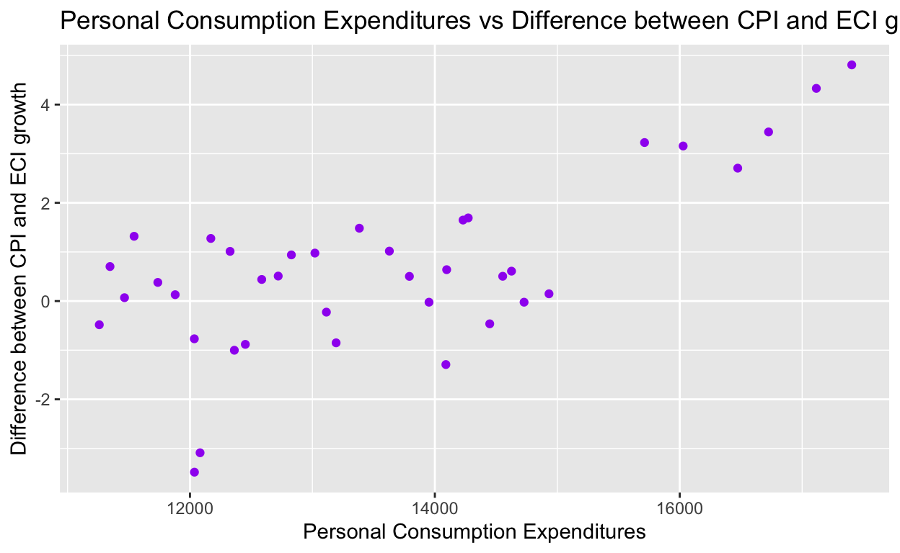
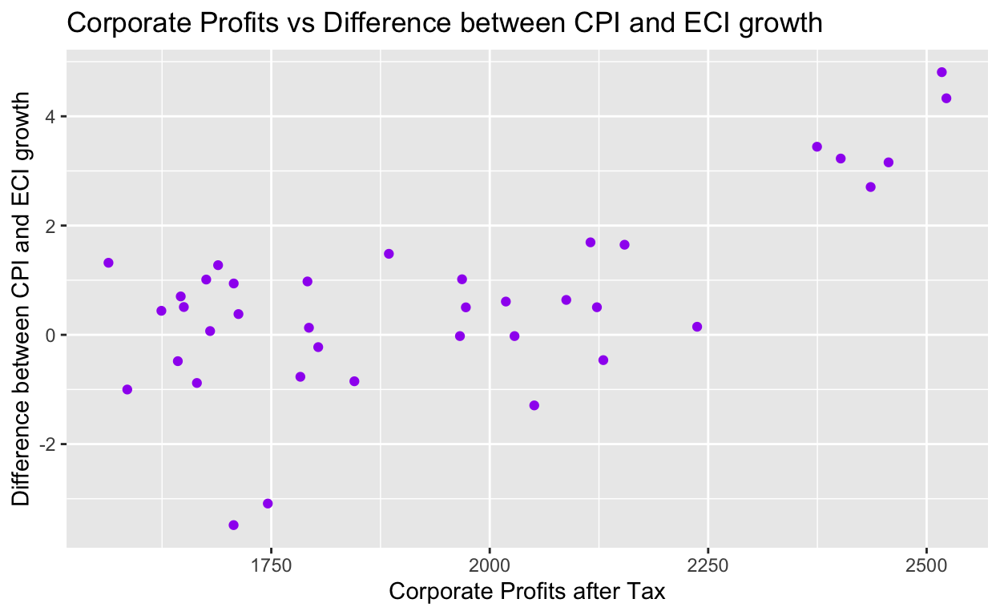

Project thoughts
I want to explore the USA Bureau of Labor Statistics (BLS) data. I will be analyzing different trends and patterns that exist in the data. Is inflation increasing faster than wage growth? If it is true, it would be difficult for lower-income households to meet their daily needs.
My hypothesis is inflation is increasing faster than wage growth. The prices of most of the products/services have increased. We always hear people complain about how their spending power has decreased significantly. We can now check if it is true. Dataset is obtained from https://www.bls.gov/ My sample consists of following variables: 1. Consumer Price Index for All Urban Consumers: All Items in U.S. City Average
. My outcome variable measures wage growth. The monthly changes in the prices and wages are measured. This is used to calculate inflation and wage growth. I will use a regression analysis to examine the relationship between these two variables. A negative relationship between the two variables shows that they are not positively correlated, which means wages are not increasing with the increase in inflation. Hence a negative relationship between the two variables would provide support for my hypothesis, and a positive relationship between the two variables would disprove my hypothesis.
cpi_all_items = read.csv("data/CPIAUCSL.csv")
cpi_all_items$Date <- ymd(cpi_all_items$DATE)
cpi_all_items <- cpi_all_items|>
rename("cpi_all_items" = CPIAUCSL)|>
select(Date, cpi_all_items)
cpi_all_items$year <- year(cpi_all_items$Date)
cpi_all_items$month <- month(cpi_all_items$Date)
cpi_all_items <- cpi_all_items|>
filter(month == 01 | month == 4 | month == 7| month == 10)|>
select(Date, cpi_all_items)
cpi_all_items$CPI_change <- (cpi_all_items$cpi_all_items - lag(cpi_all_items$cpi_all_items))
glimpse(cpi_all_items)Rows: 40
Columns: 3
$ Date <date> 2013-01-01, 2013-04-01, 2013-07-01, 2013-10-0
$ cpi_all_items <dbl> 231.679, 231.797, 232.900, 233.669, 235.288, 2
$ CPI_change <dbl> NA, 0.118, 1.103, 0.769, 1.619, 1.180, 1.030, head(cpi_all_items) Date cpi_all_items CPI_change
1 2013-01-01 231.679 NA
2 2013-04-01 231.797 0.118
3 2013-07-01 232.900 1.103
4 2013-10-01 233.669 0.769
5 2014-01-01 235.288 1.619
6 2014-04-01 236.468 1.180eci_all <- read.csv('data/ECIWAG.csv')
eci_all$Date <- ymd(eci_all$DATE)
eci_all <- eci_all|>
rename("eci" = ECIWAG)|>
select(Date, eci)
eci_all$eci_change <- eci_all$eci - lag(eci_all$eci)
glimpse(eci_all)Rows: 39
Columns: 3
$ Date <date> 2013-01-01, 2013-04-01, 2013-07-01, 2013-10-01,
$ eci <dbl> 117.4, 118.0, 118.4, 119.1, 119.4, 120.2, 121.1,
$ eci_change <dbl> NA, 0.6, 0.4, 0.7, 0.3, 0.8, 0.9, 0.7, 0.8, 0.2, head(eci_all) Date eci eci_change
1 2013-01-01 117.4 NA
2 2013-04-01 118.0 0.6
3 2013-07-01 118.4 0.4
4 2013-10-01 119.1 0.7
5 2014-01-01 119.4 0.3
6 2014-04-01 120.2 0.8cpi_eci <- cpi_all_items |>
inner_join(eci_all, by = 'Date')|>
select(Date, CPI_change, eci_change)
cpi_eci$diff_btw_cpi_eci <- cpi_eci$CPI_change - cpi_eci$eci_change
head(cpi_eci) Date CPI_change eci_change diff_btw_cpi_eci
1 2013-01-01 NA NA NA
2 2013-04-01 0.118 0.6 -0.482
3 2013-07-01 1.103 0.4 0.703
4 2013-10-01 0.769 0.7 0.069
5 2014-01-01 1.619 0.3 1.319
6 2014-04-01 1.180 0.8 0.380ggplot(data = cpi_eci, mapping = aes(y = CPI_change, x = eci_change)) + geom_point(color = "purple") + geom_smooth(method = "loess")+
labs(
y = "Change in CPI",
x = "Change in ECI",
title = "Change in ECI vs Change in CPI") +
scale_x_continuous( limits = c(0, 7),
breaks = c(0, 1,2,3,4,5,6,7)) +
scale_y_continuous(limits = c(0, 7),
breaks = c(0, 1,2,3,4,5,6,7))
employment_rate <- read.csv('data/LREM64TTUSM156S.csv')
employment_rate$Date <- ymd(employment_rate$DATE)
employment_rate <- employment_rate|>
rename("emp_rate" = LREM64TTUSM156S)|>
select(Date, emp_rate)
glimpse(employment_rate)Rows: 118
Columns: 2
$ Date <date> 2013-01-01, 2013-02-01, 2013-03-01, 2013-04-01, 20
$ emp_rate <dbl> 67.26213, 67.24430, 67.17818, 67.27208, 67.34115, 6head(employment_rate) Date emp_rate
1 2013-01-01 67.26213
2 2013-02-01 67.24430
3 2013-03-01 67.17818
4 2013-04-01 67.27208
5 2013-05-01 67.34115
6 2013-06-01 67.36551gov_cur_expend <- read.csv('data/GEXPND.csv')
gov_cur_expend$Date <- ymd(gov_cur_expend$DATE)
gov_cur_expend <- gov_cur_expend|>
rename("gov_cur_expend" = GEXPND)|>
select(Date, gov_cur_expend)
glimpse(gov_cur_expend)Rows: 39
Columns: 2
$ Date <date> 2013-01-01, 2013-04-01, 2013-07-01, 2013-10-
$ gov_cur_expend <dbl> 5704.610, 5722.833, 5743.347, 5754.859, 5799.head(gov_cur_expend) Date gov_cur_expend
1 2013-01-01 5704.610
2 2013-04-01 5722.833
3 2013-07-01 5743.347
4 2013-10-01 5754.859
5 2014-01-01 5799.275
6 2014-04-01 5861.485personal_consumption_expend <- read.csv('data/PCE.csv')
personal_consumption_expend$Date <- ymd(personal_consumption_expend$DATE)
personal_consumption_expend <- personal_consumption_expend|>
rename("pce" = PCE)|>
select(Date, pce)
glimpse(personal_consumption_expend)Rows: 118
Columns: 2
$ Date <date> 2013-01-01, 2013-02-01, 2013-03-01, 2013-04-01, 2013-0
$ pce <dbl> 11245.8, 11282.1, 11268.9, 11259.3, 11295.1, 11318.5, 1head(personal_consumption_expend) Date pce
1 2013-01-01 11245.8
2 2013-02-01 11282.1
3 2013-03-01 11268.9
4 2013-04-01 11259.3
5 2013-05-01 11295.1
6 2013-06-01 11318.5corp_profit_after_tax <- read.csv('data/CPATAX.csv')
corp_profit_after_tax$Date <- ymd(corp_profit_after_tax$DATE)
corp_profit_after_tax <- corp_profit_after_tax|>
rename("corp_profit" = CPATAX)|>
select(Date, corp_profit)
glimpse(corp_profit_after_tax)Rows: 39
Columns: 2
$ Date <date> 2013-01-01, 2013-04-01, 2013-07-01, 2013-10-01,
$ corp_profit <dbl> 1622.754, 1643.068, 1646.395, 1679.998, 1563.708head(corp_profit_after_tax) Date corp_profit
1 2013-01-01 1622.754
2 2013-04-01 1643.068
3 2013-07-01 1646.395
4 2013-10-01 1679.998
5 2014-01-01 1563.708
6 2014-04-01 1712.454finance_data <- cpi_eci|>
left_join(gov_cur_expend, by = 'Date')
finance_data <- finance_data|>
left_join(employment_rate, by = 'Date')
finance_data <- finance_data|>
left_join(corp_profit_after_tax, by = 'Date')
finance_data <- finance_data|>
left_join(personal_consumption_expend, by = 'Date')|>
select(!(CPI_change:eci_change))
glimpse(finance_data)Rows: 39
Columns: 6
$ Date <date> 2013-01-01, 2013-04-01, 2013-07-01, 2013-1
$ diff_btw_cpi_eci <dbl> NA, -0.482, 0.703, 0.069, 1.319, 0.380, 0.1
$ gov_cur_expend <dbl> 5704.610, 5722.833, 5743.347, 5754.859, 579
$ emp_rate <dbl> 67.26213, 67.27208, 67.48724, 67.13272, 67.
$ corp_profit <dbl> 1622.754, 1643.068, 1646.395, 1679.998, 156
$ pce <dbl> 11245.8, 11259.3, 11346.8, 11465.2, 11543.7head(finance_data) Date diff_btw_cpi_eci gov_cur_expend emp_rate corp_profit
1 2013-01-01 NA 5704.610 67.26213 1622.754
2 2013-04-01 -0.482 5722.833 67.27208 1643.068
3 2013-07-01 0.703 5743.347 67.48724 1646.395
4 2013-10-01 0.069 5754.859 67.13272 1679.998
5 2014-01-01 1.319 5799.275 67.71565 1563.708
6 2014-04-01 0.380 5861.485 67.94177 1712.454
pce
1 11245.8
2 11259.3
3 11346.8
4 11465.2
5 11543.7
6 11737.4ggplot(data = finance_data, aes(x = emp_rate, y = diff_btw_cpi_eci)) + geom_point(color = "purple") +labs(x = "Employment Rate", y = "Difference between CPI and ECI", title = " Employment Rate vs Difference between CPI and ECI")ggplot(data = finance_data, aes(x = gov_cur_expend, y = diff_btw_cpi_eci)) + geom_point(color = "purple")+labs(x = "Government Current Expenditures", y = "Difference between CPI and ECI", title = "Government Current Expenditures vs Difference between CPI and ECI")ggplot(data = finance_data, aes(x = pce, y = diff_btw_cpi_eci)) + geom_point(color = "purple") + labs(x = "Personal Consumption Expenditures", y = "Difference between CPI and ECI", title = "Personal Consumption Expenditures vs Difference between CPI and ECI")
ggplot(data = finance_data, aes(x = corp_profit, y = diff_btw_cpi_eci)) + geom_point(color = "purple") + labs(x = "Corporate Profits after Tax", y = "Difference between CPI and ECI", title = "Corporate Profits vs Difference between CPI and ECI")
observed_mean = mean(finance_data$diff_btw_cpi_eci, na.rm = TRUE)
observed_mean[1] 0.6603158set.seed(7890)
null_dist <- finance_data |>
specify(response = diff_btw_cpi_eci) |>
hypothesize(null = "point", mu = 0) |>
generate(reps = 1000, type = "bootstrap") |>
calculate(stat = "mean")
null_distResponse: diff_btw_cpi_eci (numeric)
Null Hypothesis: point
# A tibble: 1,000 2
replicate stat
<int> <dbl>
1 1 -0.365
2 2 -0.239
3 3 0.0163
4 4 0.362
5 5 -0.290
6 6 0.221
7 7 0.299
8 8 0.0513
9 9 -0.403
10 10 0.197
# with 990 more rowsvisualize(null_dist) +
shade_p_value(obs_stat = observed_mean, direction = "right")
null_dist|>
get_p_value(obs_stat = observed_mean, direction = "right")# A tibble: 1 1
p_value
<dbl>
1 0.005finance_data.multreg <- lm(diff_btw_cpi_eci ~ emp_rate + gov_cur_expend + pce + corp_profit, data = finance_data)
finance_data.multreg
Call:
lm(formula = diff_btw_cpi_eci ~ emp_rate + gov_cur_expend + pce +
corp_profit, data = finance_data)
Coefficients:
(Intercept) emp_rate gov_cur_expend pce
31.290860 -0.663499 -0.001529 0.001630
corp_profit
0.002055 | term | estimate | std.error | statistic | p.value |
|---|---|---|---|---|
| (Intercept) | 31.291 | 13.734 | 2.278 | 0.029 |
| emp_rate | -0.663 | 0.227 | -2.917 | 0.006 |
| gov_cur_expend | -0.002 | 0.000 | -3.593 | 0.001 |
| pce | 0.002 | 0.001 | 3.159 | 0.003 |
| corp_profit | 0.002 | 0.002 | 0.889 | 0.381 |
modelsummary::modelsummary(finance_data.multreg, gof_map = c("nobs", "r.squared", "adj.r.squared"))| Model 1 | |
|---|---|
| (Intercept) | 31.291 |
| (13.734) | |
| emp_rate | 0.663 |
| (0.227) | |
| gov_cur_expend | 0.002 |
| (0.0004) | |
| pce | 0.002 |
| (0.0005) | |
| corp_profit | 0.002 |
| (0.002) | |
| Num.Obs. | 38 |
| R2 | 0.626 |
| R2 Adj. | 0.581 |
totalwage_weekly <- read.csv("data/LES1252881500Q.csv")
totalwage_weekly$Date <- ymd(totalwage_weekly$DATE)
totalwage_weekly <- totalwage_weekly|>
rename("tt_wk_wage" = LES1252881500Q)|>
select(Date, tt_wk_wage)
glimpse(totalwage_weekly)Rows: 39
Columns: 2
$ Date <date> 2013-01-01, 2013-04-01, 2013-07-01, 2013-10-01,
$ tt_wk_wage <int> 768, 777, 779, 782, 790, 781, 798, 795, 802, 803,tail(totalwage_weekly) Date tt_wk_wage
34 2021-04-01 996
35 2021-07-01 1003
36 2021-10-01 1008
37 2022-01-01 1030
38 2022-04-01 1045
39 2022-07-01 1068malewage_weekly <- read.csv("data/LES1252881800Q.csv")
malewage_weekly$Date <- ymd(malewage_weekly$DATE)
malewage_weekly <- malewage_weekly|>
rename("male_wk_wage" = LES1252881800Q)|>
select(Date, male_wk_wage)
glimpse(malewage_weekly)Rows: 39
Columns: 2
$ Date <date> 2013-01-01, 2013-04-01, 2013-07-01, 2013-10-01
$ male_wk_wage <int> 860, 863, 855, 865, 865, 860, 878, 878, 886, 89tail(malewage_weekly) Date male_wk_wage
34 2021-04-01 1098
35 2021-07-01 1108
36 2021-10-01 1100
37 2022-01-01 1118
38 2022-04-01 1148
39 2022-07-01 1166femalewage_weekly <- read.csv("data/LES1252882700Q.csv")
femalewage_weekly$Date <- ymd(femalewage_weekly$DATE)
femalewage_weekly <- femalewage_weekly|>
rename("female_wk_wage" = LES1252882700Q)|>
select(Date, female_wk_wage)
glimpse(femalewage_weekly)Rows: 39
Columns: 2
$ Date <date> 2013-01-01, 2013-04-01, 2013-07-01, 2013-10-
$ female_wk_wage <int> 699, 706, 705, 712, 716, 715, 721, 724, 725, tail(femalewage_weekly) Date female_wk_wage
34 2021-04-01 905
35 2021-07-01 915
36 2021-10-01 928
37 2022-01-01 937
38 2022-04-01 949
39 2022-07-01 968wages <- totalwage_weekly |>
inner_join(malewage_weekly, by = 'Date')
wages <- wages |>
inner_join(femalewage_weekly, by = 'Date')
wages Date tt_wk_wage male_wk_wage female_wk_wage
1 2013-01-01 768 860 699
2 2013-04-01 777 863 706
3 2013-07-01 779 855 705
4 2013-10-01 782 865 712
5 2014-01-01 790 865 716
6 2014-04-01 781 860 715
7 2014-07-01 798 878 721
8 2014-10-01 795 878 724
9 2015-01-01 802 886 725
10 2015-04-01 803 890 725
11 2015-07-01 809 896 727
12 2015-10-01 821 904 729
13 2016-01-01 823 904 744
14 2016-04-01 828 913 746
15 2016-07-01 834 918 748
16 2016-10-01 845 924 759
17 2017-01-01 858 941 760
18 2017-04-01 863 937 782
19 2017-07-01 864 944 769
20 2017-10-01 854 943 770
21 2018-01-01 875 956 778
22 2018-04-01 881 963 783
23 2018-07-01 891 980 796
24 2018-10-01 897 991 795
25 2019-01-01 899 994 803
26 2019-04-01 913 1004 818
27 2019-07-01 922 1010 825
28 2019-10-01 934 1020 842
29 2020-01-01 951 1056 853
30 2020-04-01 1008 1091 919
31 2020-07-01 996 1112 901
32 2020-10-01 982 1069 894
33 2021-01-01 983 1079 897
34 2021-04-01 996 1098 905
35 2021-07-01 1003 1108 915
36 2021-10-01 1008 1100 928
37 2022-01-01 1030 1118 937
38 2022-04-01 1045 1148 949
39 2022-07-01 1068 1166 968ggplot(wages, aes(x = male_wk_wage, y = female_wk_wage)) +
geom_point(color = "steelblue1") +
labs(
x = "Median weekly earnings by Male",
y = "Median weekly earnings by Female",
title = "Median weekly earnings by Male vs Female") +
scale_x_continuous(labels = scales::dollar,
limits = c(690, 1200),
breaks = c(600, 700, 800, 900, 1000, 1100, 1200)) +
scale_y_continuous(labels = scales::dollar,
limits = c(690, 1200),
breaks = c(600, 700, 800, 900, 1000, 1100, 1200))wages <- wages|>
pivot_longer(
cols = male_wk_wage:female_wk_wage,
names_to = "Gender",
values_to = "Wage"
)|> mutate(Gender = if_else(Gender == "male_wk_wage", "Male", "Female"))|>
select(-tt_wk_wage)
wages# A tibble: 78 3
Date Gender Wage
<date> <chr> <int>
1 2013-01-01 Male 860
2 2013-01-01 Female 699
3 2013-04-01 Male 863
4 2013-04-01 Female 706
5 2013-07-01 Male 855
6 2013-07-01 Female 705
7 2013-10-01 Male 865
8 2013-10-01 Female 712
9 2014-01-01 Male 865
10 2014-01-01 Female 716
# with 68 more rowsemp_rate_female <- read.csv('data/LREM25FEUSM156S.csv')
emp_rate_female$Date <- ymd(emp_rate_female$DATE)
emp_rate_female <- emp_rate_female|>
rename("emp_rate_female" = LREM25FEUSM156S)|>
select(Date, emp_rate_female)
glimpse(emp_rate_female)Rows: 118
Columns: 2
$ Date <date> 2013-01-01, 2013-02-01, 2013-03-01, 2013-04
$ emp_rate_female <dbl> 68.86507, 68.97191, 68.96808, 69.10345, 69.3emp_rate_female Date emp_rate_female
1 2013-01-01 68.86507
2 2013-02-01 68.97191
3 2013-03-01 68.96808
4 2013-04-01 69.10345
5 2013-05-01 69.37194
6 2013-06-01 69.16663
7 2013-07-01 69.52443
8 2013-08-01 69.64619
9 2013-09-01 69.68034
10 2013-10-01 69.08798
11 2013-11-01 69.25314
12 2013-12-01 69.39848
13 2014-01-01 69.82815
14 2014-02-01 70.02622
15 2014-03-01 69.79737
16 2014-04-01 69.89145
17 2014-05-01 69.87947
18 2014-06-01 70.13558
19 2014-07-01 69.82265
20 2014-08-01 70.13146
21 2014-09-01 69.92525
22 2014-10-01 70.13322
23 2014-11-01 70.20206
24 2014-12-01 70.15185
25 2015-01-01 70.20106
26 2015-02-01 70.25596
27 2015-03-01 69.97244
28 2015-04-01 70.20660
29 2015-05-01 70.47730
30 2015-06-01 70.44313
31 2015-07-01 70.17364
32 2015-08-01 70.30378
33 2015-09-01 70.26089
34 2015-10-01 70.34343
35 2015-11-01 70.66569
36 2015-12-01 70.56022
37 2016-01-01 70.75059
38 2016-02-01 70.82247
39 2016-03-01 70.93041
40 2016-04-01 70.87975
41 2016-05-01 71.03483
42 2016-06-01 70.87690
43 2016-07-01 71.39449
44 2016-08-01 71.17182
45 2016-09-01 71.44682
46 2016-10-01 71.52554
47 2016-11-01 71.40524
48 2016-12-01 71.34585
49 2017-01-01 71.28627
50 2017-02-01 71.63518
51 2017-03-01 71.99344
52 2017-04-01 72.00991
53 2017-05-01 71.90608
54 2017-06-01 72.01004
55 2017-07-01 72.38814
56 2017-08-01 72.12754
57 2017-09-01 72.59240
58 2017-10-01 72.16779
59 2017-11-01 72.52444
60 2017-12-01 72.20475
61 2018-01-01 72.09051
62 2018-02-01 72.32339
63 2018-03-01 72.41241
64 2018-04-01 72.28224
65 2018-05-01 72.47143
66 2018-06-01 72.68429
67 2018-07-01 73.06442
68 2018-08-01 72.91224
69 2018-09-01 73.14074
70 2018-10-01 73.40664
71 2018-11-01 73.15422
72 2018-12-01 73.25965
73 2019-01-01 73.28045
74 2019-02-01 73.32468
75 2019-03-01 73.08810
76 2019-04-01 73.20588
77 2019-05-01 73.31188
78 2019-06-01 73.38684
79 2019-07-01 73.10712
80 2019-08-01 74.00386
81 2019-09-01 74.31046
82 2019-10-01 74.37011
83 2019-11-01 74.18275
84 2019-12-01 74.47126
85 2020-01-01 74.61433
86 2020-02-01 74.60029
87 2020-03-01 73.37003
88 2020-04-01 63.42522
89 2020-05-01 64.90271
90 2020-06-01 67.53896
91 2020-07-01 67.97804
92 2020-08-01 69.25413
93 2020-09-01 69.05836
94 2020-10-01 70.11552
95 2020-11-01 70.26177
96 2020-12-01 70.42726
97 2021-01-01 70.39912
98 2021-02-01 70.63791
99 2021-03-01 71.11924
100 2021-04-01 71.12440
101 2021-05-01 71.29319
102 2021-06-01 71.23482
103 2021-07-01 71.92331
104 2021-08-01 72.06148
105 2021-09-01 72.19311
106 2021-10-01 72.25826
107 2021-11-01 72.95343
108 2021-12-01 73.30686
109 2022-01-01 73.34660
110 2022-02-01 73.19816
111 2022-03-01 74.14473
112 2022-04-01 73.96288
113 2022-05-01 74.07340
114 2022-06-01 73.79215
115 2022-07-01 74.06201
116 2022-08-01 74.78315
117 2022-09-01 74.51083
118 2022-10-01 74.06811emp_rate_male <- read.csv('data/LREM25MAUSM156S.csv')
emp_rate_male$Date <- ymd(emp_rate_male$DATE)
emp_rate_male <- emp_rate_male|>
rename("emp_rate_male" = LREM25MAUSM156S)|>
select(Date, emp_rate_male)
glimpse(emp_rate_male)Rows: 118
Columns: 2
$ Date <date> 2013-01-01, 2013-02-01, 2013-03-01, 2013-04-0
$ emp_rate_male <dbl> 82.58338, 82.74719, 82.66598, 82.74347, 83.055emp_rate_male Date emp_rate_male
1 2013-01-01 82.58338
2 2013-02-01 82.74719
3 2013-03-01 82.66598
4 2013-04-01 82.74347
5 2013-05-01 83.05508
6 2013-06-01 82.89206
7 2013-07-01 82.95169
8 2013-08-01 82.62583
9 2013-09-01 82.62933
10 2013-10-01 82.40229
11 2013-11-01 82.97998
12 2013-12-01 83.11234
13 2014-01-01 83.17001
14 2014-02-01 82.95537
15 2014-03-01 83.35076
16 2014-04-01 83.19942
17 2014-05-01 83.36797
18 2014-06-01 83.78431
19 2014-07-01 83.93807
20 2014-08-01 83.93786
21 2014-09-01 84.12149
22 2014-10-01 84.00203
23 2014-11-01 83.85981
24 2014-12-01 84.18436
25 2015-01-01 84.20702
26 2015-02-01 84.24854
27 2015-03-01 84.40291
28 2015-04-01 84.41080
29 2015-05-01 84.34020
30 2015-06-01 84.48851
31 2015-07-01 84.43562
32 2015-08-01 84.64667
33 2015-09-01 84.64647
34 2015-10-01 84.36711
35 2015-11-01 84.36470
36 2015-12-01 84.50325
37 2016-01-01 84.90411
38 2016-02-01 84.94950
39 2016-03-01 85.15376
40 2016-04-01 84.79789
41 2016-05-01 84.98226
42 2016-06-01 85.09394
43 2016-07-01 84.88379
44 2016-08-01 84.83453
45 2016-09-01 84.90482
46 2016-10-01 84.96096
47 2016-11-01 84.96856
48 2016-12-01 85.09132
49 2017-01-01 85.24103
50 2017-02-01 85.14108
51 2017-03-01 85.15405
52 2017-04-01 85.39919
53 2017-05-01 85.31272
54 2017-06-01 85.34751
55 2017-07-01 85.28951
56 2017-08-01 84.95921
57 2017-09-01 85.67622
58 2017-10-01 85.61319
59 2017-11-01 85.62794
60 2017-12-01 86.02107
61 2018-01-01 85.89639
62 2018-02-01 86.35580
63 2018-03-01 86.20887
64 2018-04-01 86.25503
65 2018-05-01 86.36101
66 2018-06-01 86.12245
67 2018-07-01 86.24075
68 2018-08-01 85.93538
69 2018-09-01 85.98658
70 2018-10-01 86.12846
71 2018-11-01 86.34607
72 2018-12-01 86.08275
73 2019-01-01 86.40998
74 2019-02-01 86.49876
75 2019-03-01 86.73324
76 2019-04-01 86.43843
77 2019-05-01 86.31880
78 2019-06-01 86.14403
79 2019-07-01 86.19716
80 2019-08-01 86.18990
81 2019-09-01 86.46012
82 2019-10-01 86.46501
83 2019-11-01 86.72150
84 2019-12-01 86.51808
85 2020-01-01 86.58023
86 2020-02-01 86.42862
87 2020-03-01 85.81455
88 2020-04-01 75.93630
89 2020-05-01 77.91896
90 2020-06-01 79.51488
91 2020-07-01 79.82179
92 2020-08-01 81.42801
93 2020-09-01 81.51026
94 2020-10-01 82.11515
95 2020-11-01 81.96798
96 2020-12-01 82.34913
97 2021-01-01 82.60355
98 2021-02-01 82.71985
99 2021-03-01 82.80414
100 2021-04-01 82.89659
101 2021-05-01 82.95701
102 2021-06-01 83.07933
103 2021-07-01 83.86989
104 2021-08-01 83.95999
105 2021-09-01 84.15097
106 2021-10-01 84.64204
107 2021-11-01 84.99389
108 2021-12-01 85.09827
109 2022-01-01 85.02695
110 2022-02-01 85.84881
111 2022-03-01 85.98289
112 2022-04-01 85.96567
113 2022-05-01 86.00443
114 2022-06-01 85.79113
115 2022-07-01 85.85513
116 2022-08-01 85.81974
117 2022-09-01 86.14514
118 2022-10-01 85.78746emp_rate <- emp_rate_male|>
inner_join(emp_rate_female, by='Date')
emp_rate <- emp_rate|>
pivot_longer(
cols = emp_rate_male:emp_rate_female,
names_to = "Gender",
values_to = "emp_rate"
)|> mutate(Gender = if_else(Gender == "emp_rate_male", "Male", "Female"))
emp_rate# A tibble: 236 3
Date Gender emp_rate
<date> <chr> <dbl>
1 2013-01-01 Male 82.6
2 2013-01-01 Female 68.9
3 2013-02-01 Male 82.7
4 2013-02-01 Female 69.0
5 2013-03-01 Male 82.7
6 2013-03-01 Female 69.0
7 2013-04-01 Male 82.7
8 2013-04-01 Female 69.1
9 2013-05-01 Male 83.1
10 2013-05-01 Female 69.4
# with 226 more rowsfemale_householder <- read.csv('data/OFHHFH.csv')
female_householder$Date <- ymd(female_householder$DATE)
female_householder <- female_householder|>
rename("female_householder" = OFHHFH)|>
select(Date, female_householder)
glimpse(female_householder)Rows: 10
Columns: 2
$ Date <date> 2013-01-01, 2014-01-01, 2015-01-01, 2016
$ female_householder <dbl> 15469, 15420, 15544, 15622, 15572, 15423,female_householder Date female_householder
1 2013-01-01 15469
2 2014-01-01 15420
3 2015-01-01 15544
4 2016-01-01 15622
5 2017-01-01 15572
6 2018-01-01 15423
7 2019-01-01 15043
8 2020-01-01 14832
9 2021-01-01 15461
10 2022-01-01 15618male_householder <- read.csv('data/OFHHMH.csv')
male_householder$Date <- ymd(male_householder$DATE)
male_householder <- male_householder|>
rename("male_householder" = OFHHMH)|>
select(Date, male_householder)
glimpse(male_householder)Rows: 10
Columns: 2
$ Date <date> 2013-01-01, 2014-01-01, 2015-01-01, 2016-0
$ male_householder <dbl> 6229, 6304, 6162, 6310, 6452, 6424, 6480, 6male_householder Date male_householder
1 2013-01-01 6229
2 2014-01-01 6304
3 2015-01-01 6162
4 2016-01-01 6310
5 2017-01-01 6452
6 2018-01-01 6424
7 2019-01-01 6480
8 2020-01-01 6503
9 2021-01-01 6963
10 2022-01-01 7212house_holder <- male_householder|>
inner_join(female_householder, by='Date')
house_holder <- house_holder|>
pivot_longer(
cols = male_householder:female_householder,
names_to = "Gender",
values_to = "house_holder"
)|> mutate(Gender = if_else(Gender == "male_householder", "Male", "Female"))
house_holder# A tibble: 20 3
Date Gender house_holder
<date> <chr> <dbl>
1 2013-01-01 Male 6229
2 2013-01-01 Female 15469
3 2014-01-01 Male 6304
4 2014-01-01 Female 15420
5 2015-01-01 Male 6162
6 2015-01-01 Female 15544
7 2016-01-01 Male 6310
8 2016-01-01 Female 15622
9 2017-01-01 Male 6452
10 2017-01-01 Female 15572
11 2018-01-01 Male 6424
12 2018-01-01 Female 15423
13 2019-01-01 Male 6480
14 2019-01-01 Female 15043
15 2020-01-01 Male 6503
16 2020-01-01 Female 14832
17 2021-01-01 Male 6963
18 2021-01-01 Female 15461
19 2022-01-01 Male 7212
20 2022-01-01 Female 15618wages <- left_join(wages,emp_rate, by = c('Date'='Date', 'Gender'='Gender'))
wages <-left_join(wages,house_holder, by = c('Date'='Date', 'Gender'='Gender'))
glimpse(wages)Rows: 78
Columns: 5
$ Date <date> 2013-01-01, 2013-01-01, 2013-04-01, 2013-04-01
$ Gender <chr> "Male", "Female", "Male", "Female", "Male", "Fe
$ Wage <int> 860, 699, 863, 706, 855, 705, 865, 712, 865, 71
$ emp_rate <dbl> 82.58338, 68.86507, 82.74347, 69.10345, 82.9516
$ house_holder <dbl> 6229, 15469, NA, NA, NA, NA, NA, NA, 6304, 1542wages# A tibble: 78 5
Date Gender Wage emp_rate house_holder
<date> <chr> <int> <dbl> <dbl>
1 2013-01-01 Male 860 82.6 6229
2 2013-01-01 Female 699 68.9 15469
3 2013-04-01 Male 863 82.7 NA
4 2013-04-01 Female 706 69.1 NA
5 2013-07-01 Male 855 83.0 NA
6 2013-07-01 Female 705 69.5 NA
7 2013-10-01 Male 865 82.4 NA
8 2013-10-01 Female 712 69.1 NA
9 2014-01-01 Male 865 83.2 6304
10 2014-01-01 Female 716 69.8 15420
# with 68 more rowsggplot(data = wages, mapping = aes(x=Gender, y =emp_rate)) +
geom_boxplot(na.rm = TRUE)+ labs(x = "Gender", y = "Employment Rare", title = "Gender vs Employment Rate")ggplot(data = wages, mapping = aes(x=Gender, y =Wage)) +
geom_boxplot(na.rm = TRUE)+ labs(x = "Gender", y = "Wage", title = "Gender vs Wage")est_ate <- wages |>
specify(Wage ~ Gender) |>
calculate(stat = "diff in means", order = c("Male", "Female"))
est_ateResponse: Wage (numeric)
Explanatory: Gender (factor)
# A tibble: 1 1
stat
<dbl>
1 174.null_dist_wage_diff <- wages |>
specify(Wage ~ Gender) |>
hypothesize(null = "independence") |>
generate(reps = 1000, type = "permute") |>
calculate(stat = "diff in means", order = c("Male", "Female"))
ate_pval <- null_dist_wage_diff |>
get_p_value(obs_stat = est_ate, direction = "right")
ate_pval# A tibble: 1 1
p_value
<dbl>
1 0null_dist_wage_diff |>
visualize() +
shade_p_value(obs_stat = est_ate, direction = "right")wages.multreg <- lm(Wage ~ Gender + emp_rate + house_holder, data = wages)
wages.multreg
Call:
lm(formula = Wage ~ Gender + emp_rate + house_holder, data = wages)
Coefficients:
(Intercept) GenderMale emp_rate house_holder
-4661.0622 1404.3822 35.2415 0.1905 | term | estimate | std.error | statistic | p.value |
|---|---|---|---|---|
| (Intercept) | -4661.062 | 1045.944 | -4.456 | 0.000 |
| GenderMale | 1404.382 | 394.060 | 3.564 | 0.003 |
| emp_rate | 35.242 | 8.275 | 4.259 | 0.001 |
| house_holder | 0.190 | 0.046 | 4.131 | 0.001 |
modelsummary::modelsummary(wages.multreg, gof_map = c("nobs", "r.squared", "adj.r.squared"))| Model 1 | |
|---|---|
| (Intercept) | 4661.062 |
| (1045.944) | |
| GenderMale | 1404.382 |
| (394.060) | |
| emp_rate | 35.242 |
| (8.275) | |
| house_holder | 0.190 |
| (0.046) | |
| Num.Obs. | 20 |
| R2 | 0.827 |
| R2 Adj. | 0.794 |